Alternate Assemblies
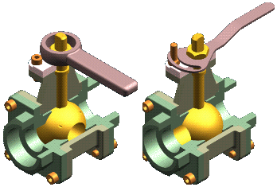
Some products require you to define multiple variations of a single assembly. These variations can be categorized into two types:
-
Assembly variations where ALL parts are identical, but some part positions change during the physical operation of the assembly. These types of assemblies contain mechanisms, linkages, actuators, and so on. In Solid Edge, these types of assemblies are considered Alternate Position Assemblies.
-
Assembly variations where MOST parts are identical, but some parts and subassemblies are different between the individual assemblies. These types of assemblies may have different components, fastener types, trim, accessories, and so forth. In Solid Edge, these types of assemblies constitute a Family of Assemblies.
The Alternate Assemblies functionality within Solid Edge makes it easier to create and use variations of an assembly because you will have fewer assembly files to manage. Alternate assemblies in Solid Edge include both Alternate Position Assemblies and Family of Assemblies.
Family of Assemblies and Alternate Position Assemblies take advantage of the capability to use the Document Name formula to make the names you display easily identifiable. The name is presented as Formula!<Member Name> to help you differentiate Family of Assemblies or an Alternate Position Assemblies from any other assembly.
Creating a New Alternate Assembly
Use the Alternate Assemblies tab to create alternate positions for an assembly or a family of assemblies. The first time you click the New Member button on the Alternate Assemblies tab, the Alternate Assemblies Table dialog box is displayed. You must specify whether the assembly will be converted to (A) a family of assemblies or (B) an assembly containing alternate positions. After the assembly is converted, it cannot be changed from (A) to (B) or from (B) to (A).
Ensure that an archive copy of the assembly you are converting exists. You can use the Save As command to create a new working copy of the assembly document before converting it to an alternate assembly.
After you specify the alternate assembly type, you define the names for the first two members. When you click OK, the second member is made the active member on the Alternate Assemblies tab. You can then proceed to define the individual member characteristics.
Alternate Assembly Edit Table dialog box
The Alternate Assembly Edit Table dialog box, available when you click the Edit Table button on the Alternate Assembly tab performs many of the same functions as the Alternate Assembly tab. Additionally, the Alternate Assembly Edit Table dialog box also allows you to view the member characteristics of all the alternate assembly members simultaneously, which you cannot do using the Alternate Assemblies tab. For example, you can see which parts are excluded for all members simultaneously.
The buttons along the top of the Alternate Assembly Edit Table dialog box allow you to perform common functions such as creating new members, deleting members, activating a member, saving a member as a new assembly document, and so forth. You can also print the table to a printer you specify and copy and paste data from the Alternate Assembly Edit Table dialog box to a spreadsheet.
A Preview window is also available with the Alternate Assembly Edit Table dialog box. The Preview window displays the currently selected member.
Some functionality that is available on the Alternate Assembly tab is not available with the Alternate Assembly Edit Table dialog box. For example, you can only exclude relationships using the Alternate Assembly tab.
Working with Alternate Assemblies
After defining the first two members of an alternate assembly, you can work with the alternate assembly using the Alternate Assemblies tab or you can click the Edit Table button on the Alternate Assemblies tab to display the Alternate Assemblies Edit Table dialog box, which is a table-driven user interface for working with alternate assemblies that performs similar to a spreadsheet application.
When you convert an assembly to an alternate assembly, functionality in other areas of the Solid Edge product may be restricted for the alternate assembly. For more information on possible restrictions, see Alternate Assemblies Impact on Solid Edge Functionality.
Adding Members to an existing Alternate Assembly
After you have converted an assembly to an alternate assembly, you can add additional members using the New button on the Alternate Assemblies tab or the Alternate Assemblies Edit Table dialog box. The characteristics of the new member are a copy of the currently active member.
Renaming Alternate Assembly members
You cannot rename an alternate assembly member. If you want to change the name of an existing member, you can make it the active member, then create a new member with the name you want. You can then delete the other member.
You cannot delete the default member, which is the first member created. It may be helpful to name the first member Default, or something similar so that later you will know that this member cannot be deleted.
Alternate Position Assemblies
As stated earlier, alternate position assemblies require that all parts in the various member assemblies are the same. The only differences you can define between individual members are for assembly variables, such as the offset values for assembly relationships and the numeric value for sketch-based dimensions.
In the Teamcenter-managed environment, Solid Edge Alternate Position Assemblies can be stored as Teamcenter Arrangements. This is enabled in the Manage page of the Solid Edge Options dialog box using the option Synchronize Alternate Position Assemblies as Arrangements. When the option is enabled, and an assembly with alternate positions is uploaded to Teamcenter a column is displayed listing all the alternate members. From this list, you can choose the default arrangement for Teamcenter.
When unmanaged Alternate Position Assemblies are added to Teamcenter using Add to Teamcenter, the default arrangement is the first member. The default can be changed once it is opened in Solid Edge.
Family of Assemblies
For a family of assemblies, you can define the following types of variations between the individual family members:
-
Offset values for assembly relationships
-
Occurrence overrides
-
Suppressed occurrences
-
Suppressed relationships
-
Suppressed assembly features
-
Suppressed frames
-
Suppressed piping routes
-
Suppressed pattern occurrences
-
Suppressed fasteners
Global Modifications and Local Modifications
When working with alternate assemblies, you can specify whether the modifications you make affect only the active member, or all members. Modifications that affect only the active member are called local modifications, and modifications that affect all members are global modifications.
When you set the Apply Edits To All Members option on the Alternate Assemblies tab, the modifications you make are globally applied to all members.
When you clear the Apply Edits To All Members option on the Alternate Assemblies tab, the modifications you make are locally applied to only the active member.
For example, when the Apply Edits To All members options is cleared, you can delete a part from one member of a family of assemblies, then place a different part for that member.
Depending on whether you are working with an alternate position assembly or a family of assemblies, some operations may not be available both locally and globally.
Activating a Member
Only one member of an alternate assembly can be active. The currently active member is displayed in the Active Member list. You can activate another member by selecting it from the Active Member list on the Alternate Assemblies tab, or you can select the member column on the Alternate Assemblies Edit Table dialog box, then click the Activate Member button.
Defining Member Variable Values
You can define different values for an assembly variable using the Member Variables option on the Alternate Assemblies tab. The variable can be associated with an assembly relationship or any other assembly variable. For example, you can reposition parts by defining different values for an angle relationship for individual alternate assembly members.
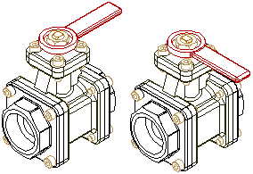
On the Alternate Assemblies tab, set the Member Variables option. Then in the Variable Table, select the variable that you want to add to the Member Variables list. On the Alternate Assemblies tab, click the Add Variables button. The variable is added to all current members. You can then activate a member, and modify the value for the variable. This option is available for both types of alternate assemblies.
You can determine the variable name for an assembly relationship by positioning your cursor over the relationship in the bottom pane of PathFinder. The relationship name is then displayed in the message box on the bottom right side of the Solid Edge window.
Overriding Occurrences
Occurrence overrides are defined using the Replace Part command on the Home tab in the Modify group. For example, you may need to define two types of handles for different members. One member has the original handle, and another member has the replacement handle.
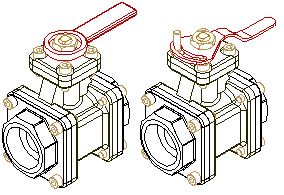
On the Alternate Assemblies tab, activate the member requiring a new handle, then ensure the Apply Edits To All Members option is cleared. You can then use the Replace Part command to replace the original handle part with the new handle part for only the active member.
For alternate position assemblies, this option can only be applied globally, since alternate position assemblies require that all parts are the same for all members. For a family of assemblies, this option can be applied globally or locally.
You can also define occurrence overrides for subassemblies within the active assembly. When replacing subassemblies, the replacement subassembly can also be an alternate assembly. When the replacement subassembly is an alternate assembly, you can select the member you want using the Assembly Member dialog box.
Suppressing Occurrences
Suppressed occurrences are defined by deleting parts for one member, but not others. On the Family of Assemblies tab, activate the member for which you want to delete a part. Select the part you want to delete in PathFinder, then press Delete. The part is deleted only for the active member, and is added to the Suppressed Occurrences list.
For alternate position assemblies, this option can only be applied globally, since alternate position assemblies require that all parts are the same for all members. For a family of assemblies, this option can be applied globally or locally.
If you are working globally (the Apply Edits To All Members option is set), when you delete a part, the part is physically deleted from the assembly and the part is NOT added to the Suppressed Occurrences list.
Suppressing Relationships
Suppressing relationships for a member allows you to reposition parts using new relationships. For example, you may need to reposition a part for one member by using faces or relationships different from the original member.
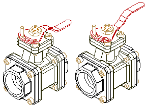
On the Family of Assemblies tab, activate the member for which you want to delete a relationship. In PathFinder, select the part, then in the bottom pane of PathFinder, select the relationship, and then press Delete. The relationships you delete are added to the Suppressed Relationships list. You can then apply new relationships to reposition the part.
When you exclude relationships locally (the Apply Edits To All Members option is cleared), you should also reapply the relationships locally. If you reapply the relationships globally (the Apply Edits To All Members option is set), you can over-constrain the part in other members.
If you are working globally (the Apply Edits To All Members option is set), when you delete a relationship, the relationship is physically deleted from the assembly and the relationship is NOT added to the Suppressed Relationships list.
Suppressing Assembly-based Features
You can use an assembly feature, but not an assembly-driven part feature in a family of assemblies. For example, you can use the Delete key to exclude a cutout feature on a per member basis while the Apply Edits to All Members option is cleared (you are working locally). The assembly feature is added to the Suppressed Assembly Features list for the member.
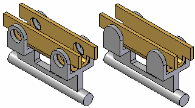
For more information, see the Alternate Assemblies Impact on Solid Edge Functionality Help topic.
Suppressing Fastener Systems
You can use fasteners created with the Fastener Systems command in a family of assemblies. You can delete or place fasteners on a per member basis by clearing the Apply Edits to All Members option first. The Suppressed Fasteners option on the Alternate Assembly tab lists excluded fasteners for a family of assembly member.
Suppressing Patterned Parts
You can place new patterns of parts, delete an existing pattern of parts, or modify an existing pattern of parts on a per member basis when the Apply Edits To All Members option is cleared.
For example, you can exclude a pattern item in an assembly pattern of parts by deleting the pattern item for one member. On the Family of Assemblies tab, activate the member for which you want to delete a pattern item. Select the pattern item you want to delete in PathFinder, then press the Delete key. The pattern item is deleted for only the active member, and is added to the Suppressed Patterned Occurrences list.
You can drag and drop a new part into the assembly and place it in the empty position in the pattern. This allows you, for example, to delete one pattern item (A) in a pattern of bolts, then use a different bolt (B) in that position.
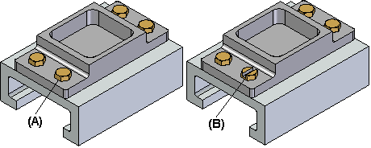
Suppressing Piping Routes
You can use the Piping Route command to define a piping route (the pipe and fittings) on a per member basis by clearing the Apply Edits to All Members option. You can also create a piping route that applies to all members by setting the Apply Edits to All Members option.
For more information, see Alternate Assemblies Impact on Solid Edge Functionality.
Suppressing Structural Frames
You can use structural frames in a family of assemblies. You can place structural frame components on a per member basis when the Apply Edits to All Members option is cleared. You can also exclude a complete frame component from an individual family of assembly member when the Apply Edits to All Members option is cleared. You cannot exclude individual part documents that make up a frame component. You can also define unique variable values for each family member.
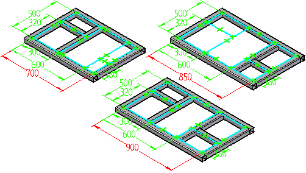
Alternate Assemblies and Alternate Components
You can also use a member of an alternate components group when defining member characteristics for an alternate assembly that is a family of assemblies, but not an alternate position assembly. For example, you can use the Replace Part command to replace a part in a family of assembly member with an alternate component, rather than use the Exclude Occurrence functionality on the Alternate Assembly tab. Although this approach can be quicker than using the Exclude Occurrence functionality, when you use Design Manager to copy or move the assembly data set to a new location, any members of the alternate components group that are not used in a family of assembly member will not be included in the data set.
For more information on alternate components, see Define Alternate Components command.
Alternate Assemblies and Adjustable Parts
You can use adjustable parts in a family of assemblies. You can edit the assembly variable used to control an adjustable part on a per member basis by clearing the Apply Edits to All Members option.
Placing and Replacing Alternate Assembly Members in Another Assembly
When you place an assembly that has alternate assembly members defined into a higher level assembly, or replace an assembly that is an alternate assembly, the Assembly Member dialog box is automatically displayed so you can select the alternate assembly member you want.
You can also click the Dynamic Configuration option to display the Dynamic Configuration dialog box, which displays the structure of the alternate assembly primary document in a table format and lists the existing members.
You can use the Dynamic Configuration dialog box to do the following:
-
Review the configuration of existing alternate assembly members.
-
Define configuration criteria to determine if it matches any existing alternate assembly members.
-
Define configuration criteria for a new alternate assembly member that you create dynamically.
-
Define configuration criteria for a new assembly document that you create dynamically.
For example, you can set the Exclude option in the Select List column to specify that a particular part is excluded from the alternate assembly Source document list. If any existing alternate assembly members also exclude that part, the Members Matching Configuration list is updated to include only those members that exclude the part.
If no existing members also exclude the part you specified, you can set the Create New Member or Create New Assembly Document options to create a new alternate assembly member or a new assembly document. When you set the Create New Member option, you can type the new member name in the Dynamic Configuration dialog box. When you set the Create New Assembly Document option and click OK, you can type the new assembly document name in the Save As dialog box.
Dynamic Configuration Limitations
You can only search and configure a new assembly document or a new family of assembly member for regular assembly components. You cannot search and configure using Family of Assembly-aware features (Assembly Features, Piping, Structural Frames, Patterns, & Fastener Systems).
When you create a new assembly document or a new member that contains Family of Assembly-aware features, a message is displayed to indicate that Family of Assembly-aware features are being included and that you should edit the new document or new member to ensure that the configuration meets your requirements.
Creating New Assemblies
When creating a new assembly document, all Family of Assembly-aware features will be copied to the new assembly, except features that are excluded from all members. Family of Assembly-aware features that are excluded from all members will be deleted from the new assembly. You can edit the assembly and delete or suppress Family of Assembly-aware features that you do not want in the new assembly.
Creating New Members
When creating a new family of assembly member, all Family of Assembly-aware features will be copied to the new assembly, except features that are excluded from all members. Family of Assembly-aware features that are excluded from all members will be deleted from the new assembly. You can edit the assembly and delete or suppress Family of Assembly-aware features that you do not want in the new assembly.
Saving a Member as a Separate Assembly
You can use the Save Member As button on the Family of Assemblies tab to save the active member as a separate assembly document. The Save Member dialog box allows you to specify a document name and location for the new assembly document. The new assembly document is a regular assembly document.
Defining Member Properties
When an assembly has been converted to a family of assemblies, you can use the Property Manager command to define properties for the parts and subassemblies for individual family members. For example, you can define a document number, revision number, and project name for individual members. These properties are used when you create a parts list for the family member in the Draft environment or an assembly report.
Suppressing and unsuppressing objects in members
In the Alternate Assemblies Table dialog box, highlight the cell for a selected family member and use the Suppress and Unsuppress commands to suppress or unsuppress an object for the selected member.
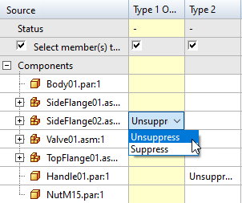
Use the Suppress in all and Unsuppress in all commands to suppress or unsuppress an object for all members
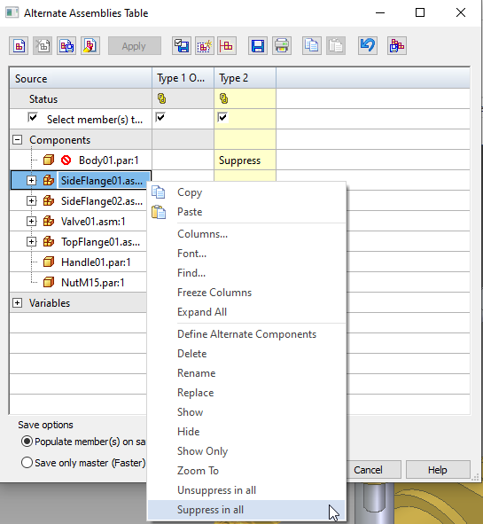
The Suppress and Unsuppress commands are also available outside of the Alternate Assemblies Table dialog box when you select an object in PathFinder or the graphic window. If you suppress or unsuppress an object outside of the table, the table updates to reflect the object status.
You can use the Add Suppression Variable command to suppress components. The command adds a variable to the Variable Table.
You can use the Delete Suppression Variable command to delete the suppression variable.
Populating members
When you create a family of assemblies, the status of the family members is clear.
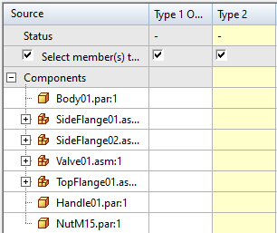
After creating family members, right click the column heading for the member and use the Populate command create a storage location on the disk for the member.
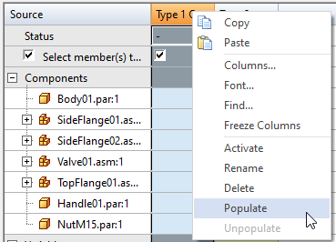
You can hold the Shift key, and click the column headings to select multiple members to populate.
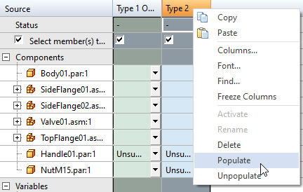
Use the Unpopulate command to remove the member storage locations from disk. It is important to note that unpopulated members are not available for downstream use.
If you modify a populated member, you can update only that member and not all members in the family. If you use the Apply button on the Alternate Assemblies Table dialog box to apply changes to a member, the status for the member shows out of date.
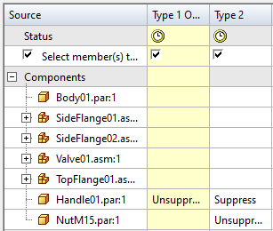
When a member is out of date, any occurrences of that member in other components are out of date. It is important for downstream users know if a member is out of date.
The out of date status for members is shown in:
-
Component Tracker in assembly and draft
-
Assembly PathFinder for current document
-
Assembly PathFinder for any document containing the out of date as a sub-assembly
-
Drawing view for assembly containing out of date member
-
Drawing View Tracker
-
Part Copy
You can use the Select member(s) to save option to save and update populated members.
Saving members
After modifying members in the Alternate Assemblies Table dialog box, by default, the Select member(s) to save option is checked.
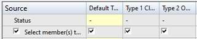
You can deselect the members that you do not want to save. If you deselect a member, the Select member(s) to save option is automatically deselected.
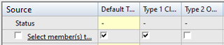
When saving members you can use theSave Only Source and Active Member (Faster) option to specify what members you want to save.
If you select the option only the source and active members are saved when you press Ctrl+S.
If you clear the option all members are saved when you press Ctrl+S.
To save changes, use the following methods:
-
Save Selected Member command
-
Save Changes command
-
Save All Members command
-
Press Ctrl + S
Undoing and redoing actions in a family of assembly
You can Undo and Redo in the Family of Assemblies table, global mode, and local mode. You can undo and redo actions, such as suppress, unsuppress, add or delete members, or modify components.
As you perform actions on family members, entries are added to the Undo log.
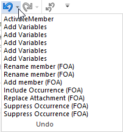
As you undo selected actions in the Undo log, entries for those entries are added to the Redo log.
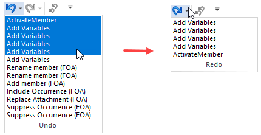
You can also undo or redo replace part inside or outside the Alternate Assemblies table.
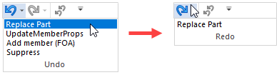
Displaying Parts in Alternate Assemblies
When you change the display of a part in an alternate assembly member, the change only affects the active member, regardless of whether the Apply Edits To All Members option is set or cleared. For example, if you hide a part in one member, the same part in other members will remain displayed, even if the Apply Edits To All Members option is set.
How do I
Create a new alternate position assemblyCreate a new family of assemblies
Publish family of assembly members to Teamcenter
Define a list of alternate components for a part
Save an alternate assembly member as a separate assembly
Examples: Dynamically moving a part in an assembly
Learn more
Alternate assemblies impact on Solid Edge functionalityUsing Family of Assemblies in the Teamcenter-managed environment
Look up more details
Save to Source commandSave to Member command
Define Alternate Components Dialog Box
Define Alternate Component command
Edit Definition command
Alternate Member Dialog Box
Assembly Member dialog box
New Member dialog box (Family of Assemblies tab)
Alternate Assemblies dialog box
Dynamic Configuration dialog box
Family of Assemblies tab
Alternate Assemblies Table dialog box
Save Member dialog box